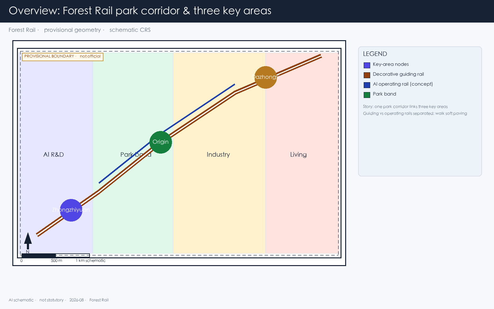
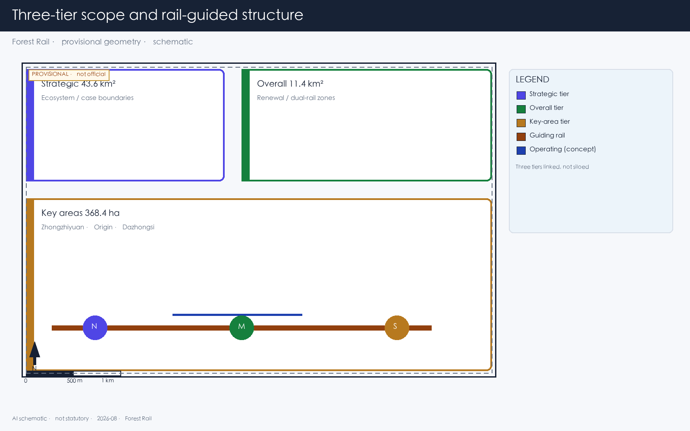
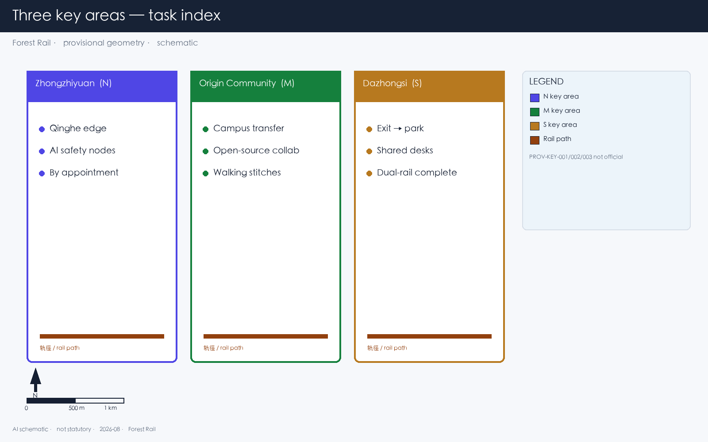
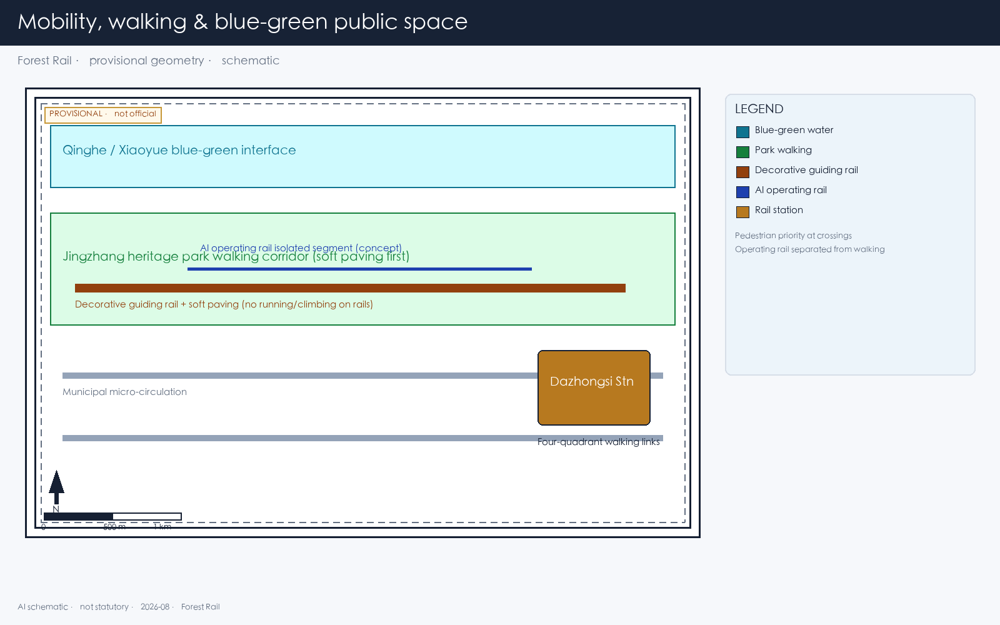
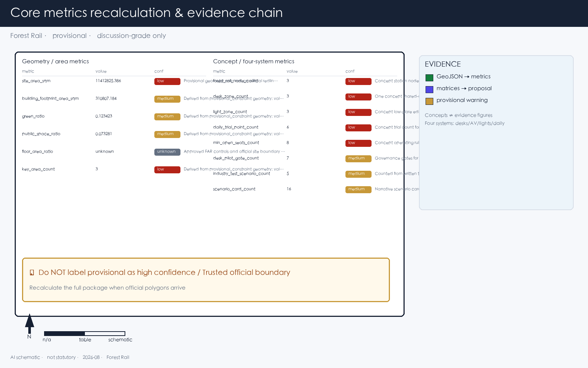

Strategic research
43.6 km² AI ecosystem, three-district/two-wing coordination, future urban form and cultural narrative.
- AI innovation & talent chains
- Global case transfer
- Naming & communication
Do not invent a green corridor: connect Jingzhang heritage park to three-station daily life. Forest Rail is the park layer of an AI city — Zhongzhiyuan, Origin, and Dazhongsi at equal depth; four systems (desks/AV/lights/daily) auditable and stoppable; safety first. Evidence boards are engineered diagrams.
Overview map将Land-use zones、Walking / mobility、Blue-green public space、Buildings & renewal、AI scenarios节点放在同一张证据图中，便于评审快速理解空间主线。
Strategy, overall design, and key areas bind industry judgment, renewal, and detailed design to layers and metrics.
43.6 km² AI ecosystem, three-district/two-wing coordination, future urban form and cultural narrative.
11.4 km² renewal, land use, transport/utilities, Jingzhang heritage park vitality belt.
Detailed design for three key areas: program, building renewal, public space, and transport.
Each key area needs industry position, spatial strategy, building/public-space actions, transport interfaces, and risks.
Garden-type autonomous innovation district: platforms, display, Qinghe culture, external links, low-carbon exchange.
Campus-adjacent transfer district: university sourcing, open source, talent services, retain/renovate, station integration.
Urban intelligent-economy district: lead firms, agent industries, services, green compound use, four-quadrant links.
Scenarios are not slogans: state users, place, data source, privacy boundary, human review, and operator.
Guiding rails指向公园；树冠辅助遮阳，雨棚兜底。
Eyes follow rust; feet on soft paving (not on rails).
Park precinct: multi-desk glass bays, sit if free.
Pause at curves to watch trees.
Ground floors open toward the rail path.
Canopy shade; heavy rain backed by shelters.
Origin Community tech transfer.
Passenger short-haul + cargo pods, separated from walking.
Low ground lights; no light shows.
Zhongzhiyuan waterfront edge.
Strategic tier aligns Central Park, High Line, Rail Park, King's Cross, Madrid Río, Cheonggyecheon/Seoullo, Xuhui Runway Park, Olympic Forest/Chaoyang Park, Jingzhang Heritage Park: learn publicness and linear organization; not viral climbing or redoing existing parks.
Five schematic evidence boards (title / legend / north arrow / scale / provisional note). GeoJSON and metrics remain authoritative.





compliance_matrix.json covers announcement 1.3–1.5 and agent.1–agent.6; standard and design-depth matrices prove professional standards.
Sources见 sources.json、agent_taskbook.json、data/processed/agent_fact_pack.md 和 standards/references。本页不得加载 CDN、远程地图瓦片、外部脚本、外部字体、API 请求或 iframe。
Missing regulatory, road, ownership, utility, heritage, and engineering conditions must be listed in assumptions.json and explained in the proposal.